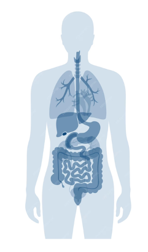

Explore the data. Understand the factors.
Diabetes is a chronic disease that occurs either when the pancreas does not produce enough insulin or when the body cannot effectively use the insulin it produces. Insulin is a hormone that regulates blood glucose.

Hover or tap an organ to see how it connects to diabetes-related indicators in the dataset.
Based on 2024 regional estimates from the IDF Diabetes Atlas and IDF type 1 estimates. The map compares IDF regions rather than individual countries. Type 1 is shown as direct all-age regional counts. Type 2 is shown as an estimate because IDF publishes regional diabetes prevalence for all diabetes, while also stating that over 90% of cases are type 2.
Not all risk factors are equal. Some are beyond our control, while others are tied to our daily choices. Explore how different parameters shift the balance between health and diagnosis.
Select a factor to see its impact on diabetes.
Move the sliders to see how daily habits affect your estimated risk.
Ever wondered how your lifestyle stacks up against the data? Adjust the sliders on the right to input your habits and medical history.